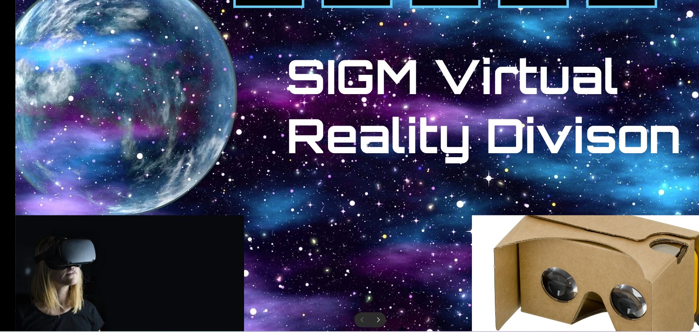
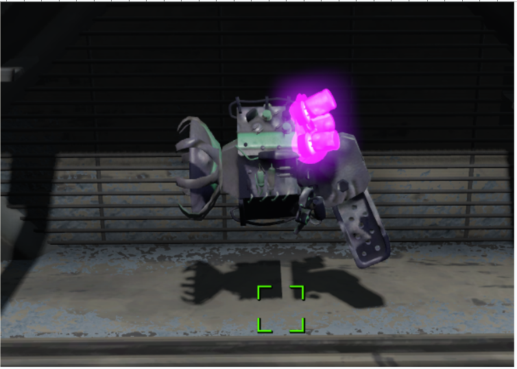
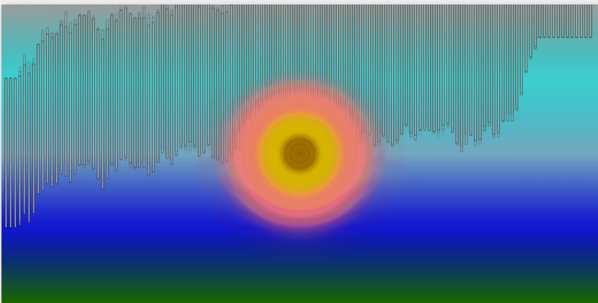
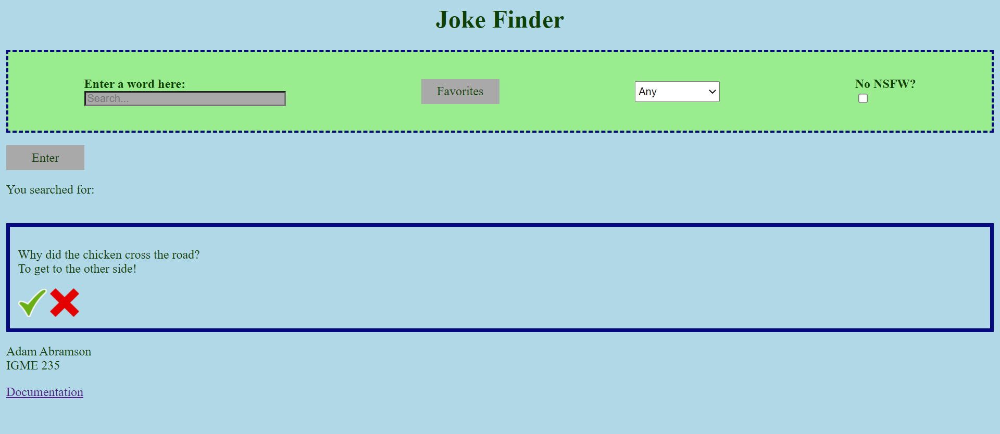

Adam Abramson
Game Developer and Designer seeking new opportunities
About Me
Hello! My name is Adam Abramson and I am a 4th year student at Rochester Institute of Technology majoring in Game Design and Development and Minoring in Web Development. One of my biggest strengths is my creativity and willingness to share my ideas. If you show me any image, I can find a way to incorporate it in a video game.
Contact Information
- Phone Number: 973-369-5056
- Email: aea8656@rit.edu
Important Links
My Work
Changeling Website
This is a video of what I worked on over the Summer for the website of the upcoming video game Changeling. Changeling is an upcoming murder mystery VR game made by students and staff of RIT's school of Interactive Games and Media. On the website, there will be an experience for each character in the game and my responsibility was the Father, Dylan. In this game you go to the highlighted door, and select the item the family member is looking for. Most of the images used were either already pre-loaded to the team's repo, or were stock images from royalty free websites. Some I even made myself with MS Paint and Gimp like the baby rattle, book, and hands that surround Dylan as time progresses. These hands represent him succombing to the anxiety and pressure of him thinking it's his responsiblity always be there for his family. If the screen goes black, the game ends. The experience is currently not uploaded to the site so I made a video of how it works.
SIGM Website Design
This is a prototype for a VR website that I made for my IGME 110 class. It was made using Figma.
Operation: Takeover
This is a video demo of a level I designed using Hammer++ and assets from Half-Life 2. I created it as a part of my level design class, IGME 420. The level takes place in an abandoned castle, and your mission as the player is to retake the castle back for humanity. I stylized the castle to be abandoned by surrounding it with grafiti. There are 3 sections to the map. The first is the outer walls, where you use a pistol to defeat head crabs. Once you get past this section, you obtain an SMG and reach the garden, where you have to stay on the bridge and take out more headcrabs. Lastly, you get the crossbow, and enter the castle where a bossfight awaits.
The Time Capsule
This is a game modification of Fallout 4 that I helped work on. The mod is about locating a special weapon that freezes enemies in time inside of a makeshift pre-war vault. My responsiblity was to retexture the weapon so that it isn't visually identical to a weapon already in-game. I also helped out with the level's design, figuring out where in game, the environment should be established.
It's Scorpin Time
Fast Walk
Game Over Music
Background Music
Main Menu Music
Timer Ending Music
Win Music
These are audio files I made for a game demo called "It's Scorpin time". It is a 3D open world game where you are a scorpion mother who had her children whisked away during a storm. You must find all of your scorplings before the sun sets on the desert. Some of the audio repeats so you do not have to listen the whole way through. Most of the audio was made using Beepbox. Since it was in the desert, I went with a more western theme for the menu and background music. Some cases like the walking was made by me tapping my fingers against the keyboard. It may not sound exactly like how a scorpion usually walks, but the game takes place in a desert after rain so it fits the scenery better. The audio files I included in order are the walking sound, the game over music, the game's background audio, the main menu music, the countdown music for when you are runnning out of time, and the victory theme.
Audio Visualizer
This website uses canvas.js to visually display audio files into cool video art. It's code was origninally written in JavaScript, and later bundled with node, and transpiled into TypeScript. The home page shows a menu that points to the app and documentation about it. The first visualizer is themed around weather. The bars on top fall like raindrops and the circles in the center resemble the sun. I plan to make more visualizers in the future.
Hidden Within

Hidden Within is a recreation of the shell game changed to a casino theme. In it, a coin is hidden within a set of 3 cards. Each time the shuffle button is pressed, the cards are shuffled into different positions. After more than 10 shuffles, the player can guess if they picked the right card. If they did, they win. The main way I programmed this game is by using the document object model. I was able to animate the card’s movement for the game by accessing the object’s CSS and changing it’s positioned each frame. One important thing I learned during the project is how ES6 classes work. By creating a class, I was able to store the card’s HTML reference, current position, and its future position, so that I can animate all the cards moving without overlapping, which was my biggest struggle during programming. Since the movements of the cards are completely randomized, sometimes they overlapped with each other, preventing the player from choosing the right card. I stopped this by creating lists of every possible position and transferring the contents of that list onto another empty list in a random order to tell each card where it must go. Ideas I have of improving it is by making the game based on a 3x3 grid instead of a line. Overall, I am proud of the game that I have made.
Joke Finder
This website allows users to search for specific jokes based on words they type in using JokeAPI. After entering a word, the site uses XHR to recive a list of jokes from the API containing the searched word. From there, you can press a check mark to add the joke to a separate site containing a list of your favorites. You can remove the joke from favorites by pressing the X next to the check. You can even the jokes being searched for with the category dropdown or the NSFW filter button. I am continuing to work on this website to improve it's design and patch bugs within the code.
Thank you for visiting my portfolio!